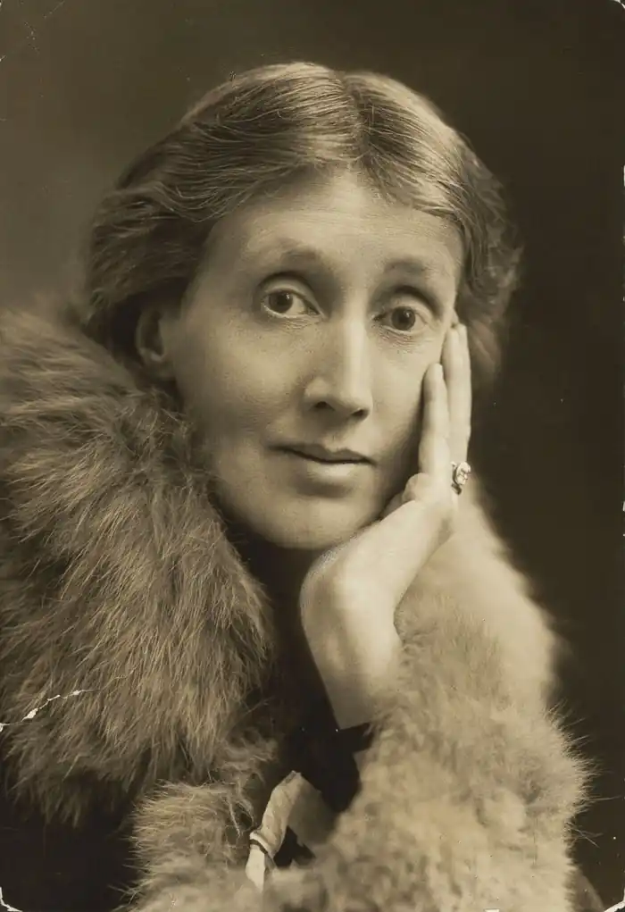
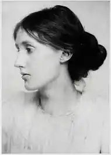
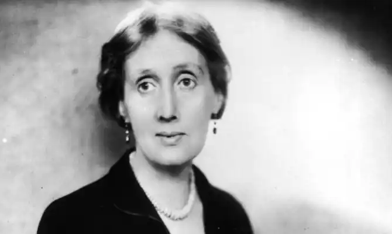

ВУЛФ, Вірджинія (Woolf, Virginia — 25.01.1882, Лондон — 28.03.1941, Льюїс, Сассекс) — англійська письменниця, літературний критик, теоретик модернізму.Народилася в сім'ї відомого літературознавця, філософа та історика Леслі Стівена, людини радикальних поглядів і глибокої ерудиції, автора фундаментальних праць "Історія англійської думки у вісімнадцятому столітті" і знаменитого "Словника національних біографій". У домі Стівенів бували видатні письменники, вчені, художники. Його першою дружиною була дочка Вулф Теккерея. Після її смерті Стівен одружився із вдовою відомого адвоката Джулією Дакворс. Серед чотирьох дітей від цього шлюбу третьою дитиною була Вірджинія, котра вирізнялася з дитинства підвищеною чутливістю, великою сприйнятливістю і слабким здоров'ям. Вона отримала домашню освіту, провівши дитинство і юність серед книг надзвичайно багатої бібліотеки батька, в атмосфері культурних інтересів і літературних знайомств.
У 1904 р. після смерті батька діти — Тобі, Адріан, Ванесса та Вірджинія замешкали в одному з центральних районів Лондона — Блумсбері. Тут, у будинку на Ґордон-Сквер, неподалік від Британського музею, розпочався новий період в їхньому житті, пов'язаний з виникненням у 1906 р. групи "Блумсбері", яка об'єднала молодих людей, чиї зацікавлення були пов'язані з мистецтвом. Сюди входили письменники Літтон Стречі та Е.М. Форстер, мистецтвознавець Роджер Фрай, художник Клайв Белл — майбутній чоловік Ванесси, журналіст Леонард Вулф — майбутній чоловік Вірджинії, а також деякі інші випускники та студенти Кембридж; Центром групи була сім'я Стівенів, а її душею — Вірджинія. Щотижневі зустрічі блумсберійців переростали у тривалі та палкі суперечки про мистецтво, про шляхи його розвитку в сучасну епоху. Усі були одностайними у своєму погляді на мистецтво як найважливішу грань життя суспільства і найвищий прояв можливості людини, всі вітали нові художні відкриття і свято вірили в те, що мистецтво — найнеобхідніша умова існування цивілізації.
Одним зі своїх наставників блумсберійці вважали філософа Дж. Е. Мура, котрий тяжів де інтуїтивізму і надавав особливого значення аналізові відчуттів. Етичну теорію Дж. Мура, його книгу "Principia Ethica" ("Основи етики", 1903) в якій проникнення в сутність прекрасного і встановлення гармонійних взаємовідносин між людьми проголошуються найважливішими життєвими принципами, вони сприйняли як одкровення. Члени групи "Блумсбері" рішуче заперечували такі характерні для вікторіанської епохи лицемірство, напускну сором'язливість просторікування і пихатість. Титули й офіційні нагороди висміювалися в їхньому середовищі. В людині цінувалися щирість, безпосередність вміння тонко реагувати на довкілля, неупередженість думок, вміння розуміти і цінувати прекрасне, невимушено і зрозуміло викладати свою думку в розмові, обґрунтовувати її в дискусії. Блумсберійці кидали виклик вульгарності, меркантильності та обмеженості. Рішуче заперечуючи утилітарний підхід до життя, вони були схильні дивитися на себе як на обраних; служіння мистецтву вони розглядали як своєрідний священний ритуал, а докори в елітарності не бралися до уваги, оскільки у визначенні "високолобі", як їх часто прозивали в критиці і літературному середовищі, для них приховувався особливий смисл: цим словом особисто вони називали людину, котра, за словами Вулф вирізняється високим рівнем інтелекту і таланту, живе у постійних творчих пошуках; для неї ідея важливіша від життєвого благополуччя. Де "високолобих" Вулф відносила В. Шекспіра і Ч. Діккенса, Дж.Г. Байрона і П.Б. Шеллі, В. Скотта і Д. Кітса, Ґ. Флобера і Г. Джеймса. У 1910 р. в середовищі блумсберійців з'явився Р. Фрай, котрий відіграв важливу роль у культурному житті тогочасної Англії. Він сприяв організації в Лондоні виставок картин французьких імпресіоністів і постімпресіоністів (191С і 1912 pp.). Поява у виставкових залах британської столиці полотен Е. Мане і А. Матісса. В. Ван Гога і П. Сезанна була сприйнята як зухвалий виклик загальноприйнятим смакам. Лише невелика частина публіки сприйняла їхнє мистецтво як явище значне і принципово нове. Поміж тих, хто вітав імпресіоністів, була й Вулф. Невипадково саме 1910 рік вона назвала межею, то позначила "зміни в англійському характері". Картини Мане і Сезанна вона сприйняла як одкровення не лише в образотворчому мистецтві, айв інших видах мистецтва. Імпресіонізм притаманний прозі й самої Вулф. У 1912 р. Вірджинія Стівен стала дружиною Леонарда Вулфа, добре відомого у ті роки своїми статтями з питань колоніальної політики Британської імперії. Він був випускником Кембриджа, провів сім років на Цейлоні. Враження них років відобразились у його книзі "Село в джунглях". В будинку подружжя Вулф налагодилася творча атмосфера, плідна для кожного з них. Коло друзів поповнилось: у вітальні Вулф бували поети і прозаїки — Т.С. Еліот, Д.Г. Лоуренс, Е. Бауен, С Спендер, знавець античності Г. Дікінсон. Дотепна, товариська, до всього цікава В. завжди перебувала в центрі, притягувала співрозмовників. У 1917 р. подружжя Вулф заснувало видавництво "Хоґарт-Прес". Більшу частину обов'язків, пов'язаних з його діяльністю, виконувала особисто Вулф. Вперше у пресі Вулф виступила в 1904 р. в газеті "Ґардіан" з рецензією; згодом її критичні статті почали з'являтися на сторінках літературного додатка до газети "Тайме". Критиком і оглядачем цього видання вона була протягом тридцяти років. У 1915 р. вийшов друком її перший роман "Подорож назовні" ("The Voyage Out"). Вона працювала над ним сім років. Це був початок її шляху романіста, на якому вона відважно заявила про своє прагнення до експерименту, до пошуку нових доріг у художній прозі. Досить відчутний вплив на Вулф філософії A. Берґсона та творчості М. Пруста. Свої погляди на літературу, завдання романіста та принципи художньої зображальності Вулф виклала у статтях "Сучасна художня проза" (Modern Fiction", 1919) та "Містер Беннетт і місіс Браун" ("Mr. Bennett and Mrs. Brown", 1924), що стали її естетичними маніфестами. Вулф виступила переконаною противницею письменників старшого покоління — Г. Веллса, Дж. Голсуорсі та Беннетта, котрих вона назвала "матеріалістами", оскільки їх, на думку Вулф, цікавила "не душа, а плоть" і "вони витрачають свою непересічну майстерність і ретельність, намагаючись зробити тривіальне і проминуче справжнім і вічним"; вона протиставила їм "спіритуалістів" — Дж. Джойса, Д.Г. Лоуренса та Т.С. Еліота, котрі намагалися "наблизитися і зберегти щиріше і точніше те, що цікавить їх і керує ними". До "спіритуалістів" Вулф відносила й себе. Для неї мистецтво — це світ емоцій, уяви, безкінечних асоціацій, це вміння передати миттєве враження, біг часу, розмаїття відчуттів; відтворити реальність — означає розкрити світ почуттів, змусити читача пройнятися настроями героїв, автора; побачити, як і вони, гру світла, почути симфонію звуків, відчути подув вітру. Кожен твір Вулф — художній експеримент. У "плинній прозі" вона відтворює рух часу, особливості сприймання життя в дитинстві, юності, в старості; накреслює контури паралельних доль людей, котрі, розвиваючись, у якийсь момент переплітаються, а потім знову розходяться. Відобразити в одній миттєвості суть буття — ось що особливо важливе для Вулф. Психологізм її прози елегантний і витончений, його малюнок вибагливий. Вулф цікавить не розвиток подій, а рух свідомості, емоцій і почуттів. Фіксація їхньої динаміки віртуозна, захоплююча у своєму розмаїтті. "Вона мріє, висуває припущення, викликає видива, але вона не створює фабули та сюжету і чи може вона створювати характери?" — запитував сучасник і шанувальник таланту Вулф письменник Е.М. Форстер. У лекції про Вулф він зазначав: "Вона любила всотувати в себе фарби, звуки, запахи, пропускала їх через свою свідомість, де вони перепліталися з її думками і спогадами, а потім знову витягувала на світло, водячи пером по папері... Так самовіддано, як вона, вміли чи хоча б намагалися писати поодинокі... Вона була абсолютною володаркою своєї складної майстерності". Вулф уміла писати серйозно і жартівливо, вона поринала у створювану нею ілюзію, не випускаючи її структури з-під свого контролю. У творчості Вулф виокремлюються три періоди. У перший (1915—1922) створені романи "Подорож назовні", "Ніч і день"("Night and Day", 1919), оповідання, які увійшли у збірку "Понеділок і четвер" ("Monday and Thursday", 1921), і роман "Кімната Джейкоба" ("Jacob's Room", 1922), який багато в чому став підсумком ранніх шукань письменниці, синтезувавши перспективи подальшого розвитку. Другий період припадає на середину 20-х років і включає романи "Місіс Делловей"("Mrs. Dalloway", 1925) і "Домаяка" ("То the Lighthouse", 1927), що став вершиною творчості Вулф. У третій період (1928— 1941) створені "Орландо" ("Orlando", 1928), "Xemi"("Jhe Waves", 1931), "Роки"("The Years", 1937) і "Між актами" ("Between the Acts", 1941). Протягом усього життя Вулф писала оповідання, есе, рецензії та статті про літературу, образотворче мистецтво, виступала з проблем жіночої емансипації. Визнання здобули її збірки "Рядовий читач" ("The Common Reader", 1925; 1932), праця про права жінок "Своя кімната" ("A Room of One's Own", 1928). У "Своїй кімнаті" Вулф звернулася до питань, які завжди глибоко хвилювали її, — про місце жінки в житті та суспільстві, про її роль у вихованні дітей, про властиву їй своєрідність світосприйняття і про проблеми взаємин сучасних мужчин і жінок. Літературно-критична діяльність Вулф — один із найважливіших аспектів культурного життя Англії 10—30-х років; її резонанс відчутний і сьогодні. Внесок В. у формування нового художнього мислення загальновизнаний. Критична спадщина Вулф позначена неповторним чаром її витонченої особистості, проникливою силою таланту і широтою ерудиції, які проявились у глибині й оригінальності міркувань про мистецтво попередників і сучасників (статті про Д. Дефо, Д. Остін, В. Скотта, Ч. Діккенса, сестер Бронте, Д.Г. Лоуренса, Монтеск'є, М. Пруста тощо. Цікавою є її стаття про розмаїття романних форм "Різновиди роману" ("Phases of Fiction", 1929), у якій вона пропонує свою класифікацію письменників, беручи до уваги особливості змалювання ними життя і людини.